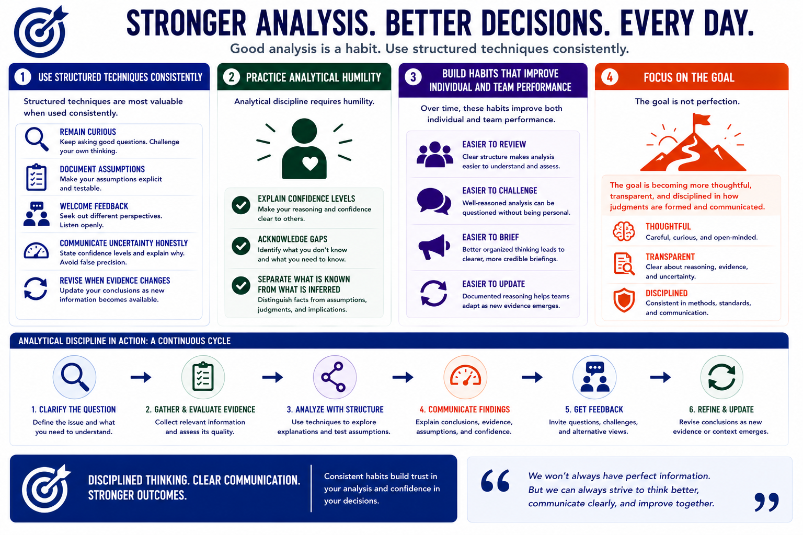

Structured Analytic Techniques
Building Analytical Discipline
Connecting to LMS... Progress: in progress
Version 1.0 | Date: 2026-06-16 | Educational overview of structured analytic techniques for judgment under uncertainty.

Narration
Structured techniques are most valuable when used consistently. Analysts should remain curious, document assumptions, welcome feedback, communicate uncertainty honestly, and revise conclusions when evidence changes.
Analytical discipline requires humility. A strong analyst can explain confidence levels, acknowledge gaps, and separate what is known from what is inferred.
Over time, these habits improve both individual and team performance. They make analysis easier to review, challenge, brief, and update.
The goal is not perfection. The goal is becoming more thoughtful, transparent, and disciplined in how judgments are formed and communicated.